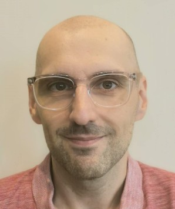

Analyste-développeur · Analyste fonctionnel · Développeur .NET / C#
25 ans à transformer des besoins métier en applications fiables : de l'analyse fonctionnelle jusqu'à la mise en production, avec C#, .NET et SQL Server.

Analyste-développeur avec 25 ans d'expérience, je combine analyse fonctionnelle et développement d'applications métiers critiques. J'ai l'habitude de recueillir les besoins des utilisateurs, de les traduire en spécifications techniques et fonctionnelles, de coordonner des équipes de développement — y compris offshore — et d'accompagner les projets jusqu'aux tests et à la mise en production.
Solide expertise en C#, .NET, SQL Server et intégration de systèmes, y compris les processus d'extraction et d'intégration de données (ETL). Rigoureux, autonome, orienté qualité et amélioration continue, j'utilise l'IA au quotidien.
Je continue à me former pour suivre l'évolution de l'écosystème .NET.
Coordination avec une équipe de développement au Vietnam : analyse des besoins, spécifications base de données, répartition des tâches via Jira, tests et suivi.
Méthode Agile pratiquée chez un client : suivi des tâches dans Jira pendant environ 2 ans, avec réunion d'équipe hebdomadaire.
Support technique en C#, requêtes et procédures stockées : diagnostic, correction et explication des solutions.
Revue et optimisation de scripts SQL et de procédures stockées, avec explication des améliorations apportées.
Gestion d'applications critiques en production continue.
Gestion de données personnelles sensibles (RGPD).
Documentation rigoureuse à des fins de conformité.
Modélisation, diagrammes de cas d'utilisation, de classes et de séquence.
Webservices.
Programmation (C, C++, Cobol, RPG, PHP), SQL, analyse, bases de données, réseaux.
Survolez ou touchez une carte
Sport : tennis, cross training — Loisirs : jeux de plateau, Lego
Je suis disponible, avec un préavis réductible, pour un nouveau défi d'analyse fonctionnelle ou de développement .NET. Écrivez-moi par e-mail ou sur LinkedIn : mon CV complet vous sera transmis sur simple demande.
E-mail : fabian.peruzzi@gmail.com · LinkedIn : linkedin.com/in/fabian-peruzzi-0184663b7 · Page en ligne : notoriousfabb.github.io